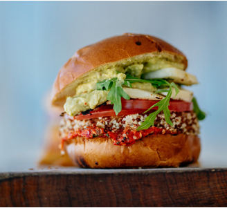
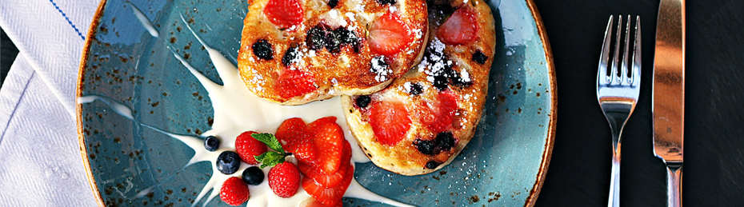

BRUNCH
Our brunch menu highlights some old brunch favorites as well as new twists on international classics. In addition, we offer a variety of vegetarian and vegan items as well, so everyone can have a happy brunch together. New specials debut every week that feature some of the season’s best ingredients, and our menu changes every 3-4 months, so check back often for new items.


BRUNCH MENU
Breakfast Sandwiches
ONE SHOT BREAKFAST EGG SANDWICH (V V*)
- Scrambled eggs and cheddar on a brioche bun
- $8
- ADD MEAT +0.50
- SUB TOFU SCRAMBLE +1.00
THE A.B.E. (V)
- Avocado, bacon, and egg whites with tomato, dressed greens, and herbed goat cheese
- $9
ULTIMATE BREAKFAST SANDWICH (V)
- Two fried eggs, bacon, brie, and a crispy hashbrown patty on a brioche bun
- $9
HUMMUS GARDEN BAGEL (V)
- Housemade hummus, dressed greens, and charred corn salsa garnished with pickled jalapeno
- $8
HUDSON BAGEL (V)
- Fuji apples, bacon, and brie with dressed greens and sour cherry jam
- $9
SMOKED SALMON BAGEL
- With scallion cream cheese, capers, cucumbers, and a dill and radish salad
- $12
Cafe Favorites
BISCUITS AND GRAVY (V)
- House-made buttermilk biscuits in sawmill gravy with pork sausage OR panseared mushrooms and two over-easy eggs
- $12
MUSHROOM & BUTTERED KALE OMELETTE (V)
- 3 egg omelet served with choice of meat, hash browns and dressed greens
- $12
- ADD CHEESE (CHEDDAR, SWISS, BRIE OR GOAT CHEESE) +1.00
- ADD AVOCADO +3.00
BREAKFAST BURRITO (V V*)
- Scrambled eggs, potatoes, bell peppers, and onions served with pickled jalapeño, sour cream, and dressed greens
- $10
HUMMUS GARDEN BAGEL (V)
- Housemade hummus, dressed greens, and charred corn salsa garnished with pickled jalapeno
- $8
- ADD AVOCADO +3.00
- ADD MEAT +3.00
- ADD CORN SALSA +1.00
- ADD CHEESE +1.50
BAKED APPLE FRENCH TOAST (V)
- Rustic toast in vanilla custard topped with spiced apples, creme anglaise, and caramelized pecans
- $11
TOFU SCRAMBLE (V V*)
- House-made tofu scramble, fresh avocado, potatoes, butternut squash, onions, and bell peppers served with dressed greens, hash browns and choice of toast
- $11
THE STANDARD (V)
- Scrambled eggs, bacon, and cheddar on a house-made buttermilk biscuit served with hash browns and dressed greens
- $11
HUEVOS RANCHEROS (V)
- Two sunny eggs, chorizo, flour tortillas, and frijoles negros with ranchero sauce, sour cream, charred corn salsa, and pickled jalapeno
- $12
EGGS YOUR WAY (V V*)
- Two eggs served with choice of meat and toast, hash browns, and dressed greens
- $10
STEELCUT ORGANIC OATMEAL (V V*)
- Prepared with your choice of milk and topped with spiced apples and caramelized pecans
- $9